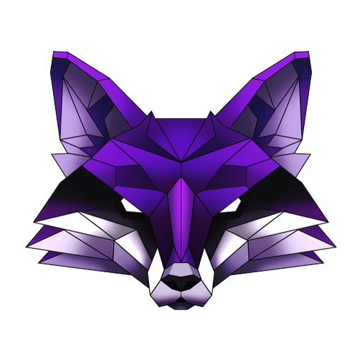

ConsoleOperator Console
| Type | Name / ID | Host | User | Remote IP | OS/Arch | PID | Transport | Last Checkin | Status |
|---|
Double-click a session or beacon in the table/graph to open an interaction console.
Available views: Sessions, Beacons, Listeners, Generate, Event Log, Loot, Operators
Connection to teamserver lost
test c2, change download dir, copy last c2 url, disconnect, help